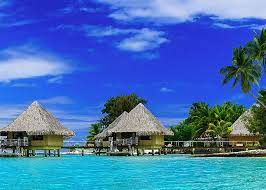
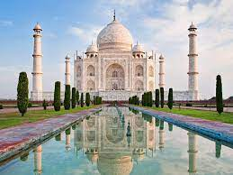
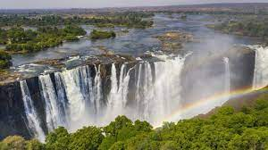
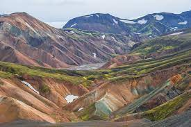

15 Places You Must Visit In Your Life
Your Definite Bucket List
5. Bora Bora, French Polynesia

Bora Bora (French: Bora-Bora; Tahitian: Pora Pora) is an island group in the Leeward Islands. The Leeward Islands comprise the western part of the Society Islands of French Polynesia, which is an overseas collectivity of the French Republic in the Pacific Ocean. Bora Bora has a total land area of 30.55 km2 (12 sq mi). The main island, located about 230 kilometres (143 miles) northwest of Papeete, is surrounded by a lagoon and a barrier reef. In the center of the island are the remnants of an extinct volcano, rising to two peaks, Mount Pahia and Mount Otemanu; the highest point is at 727 metres (2,385 feet). Bora Bora is part of the Commune of Bora-Bora, which also includes the atoll of Tūpai. The languages spoken in Bora Bora are Tahitian and French. However, due to the high tourism population, many natives of Bora Bora have learned to speak English.
4. Taj Mahal, India

The Taj Mahal was designated as a UNESCO World Heritage Site in 1983 for being "the jewel of Muslim art in India and one of the universally admired masterpieces of the world's heritage". It is regarded by many as the best example of Mughal architecture and a symbol of India's rich history. The Taj Mahal attracts 7-8 million visitors a year and in 2007, it was declared a winner of the New 7 Wonders of the World (2000-2007) initiative.
3. Machu Picchu, Peru

Machu Picchu is a 15th-century Inca citadel, located in the Cusco Region of Peru. It was the largest Inca citadel in the world until the Spanish Conquest of the 15th century. The ruins of the citadel are located in the Cusco Region, in the Urubamba Province, which is in the Sacred Valley, Urubamba District, in the Urubamba Region.
2. Victoria Falls, Zambia

Victoria Falls is a waterfall on the Zambezi River in southern Africa, which provides habitat for several unique species of plants and animals. It is located on the border between Zambia and Zimbabwe and is one of the world's largest waterfalls, with a width of 1,708 m (5,604 ft). While it is neither the highest nor the widest waterfall in the world, the Victoria Falls are classified the largest, based on its combined width of 1,708 metres (5,604 ft) and height of 108 metres (354 ft), resulting in the world's largest sheet of falling water. The Victoria Falls are roughly twice the height of North America's Niagara Falls and well over twice its width.
1. Highlands, Iceland

The Highlands is a region of Iceland that is home to the largest number of glaciers in the world. The Highlands are located in the southwest of Iceland, between the islands of Eyjafjallajökull and Höfn. The Highlands are the most remote part of the country, with a total area of about 1,000,000 square kilometres (4,000,000 sq mi). The Highlands are the only part of Iceland that is not covered by the national park system.